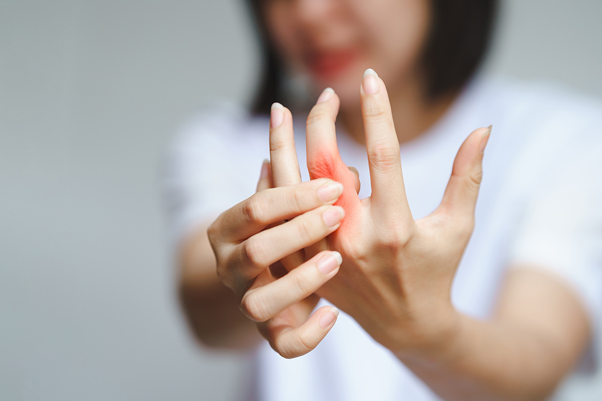

WELCOME TO
GOSAIKUNDA HEALTH CARE CENTRE
गोसाइकुण्ड स्वास्थ्य सेवा केन्द्र बाथरोग, मधुमेह तथा थाइराईड रोगको सघन उपचार गराउने उदेश्य राखी २०७० सालमा
स्थापित भएको संस्था हो । यस संस्थामा नेपालमै अन्र्तराष्ट्रिय स्तरको बाथरोग, मधुमेह, थाइरोइड तथा हर्मोन रोगको लागी
प्रभावकारी उपचार गरिन्छ । विशेषगरी नेपालको कुनैपनि हस्पिटलहरुमा वाथरोगको उपचारको लागि विभाग खडा नगरिएको
र विशेषज्ञ डाक्टरहरु समेत नगन्य मात्रामा रहेको अवस्था मध्येनजर गर्दै गोसाइकुण्ड स्वास्थ्य सेवा केन्द्र ( बाथरोग सेन्टर)
खोलिएको हो ।
Read More
Book Appoinment
About Us
"गोसाइकुण्ड स्वास्थ्य सेवा केन्द्र बाथरोग, मधुमेह तथा थाइराईड रोगको सघन उपचार गराउने उदेश्य राखी २०७० सालमा स्थापित भएको संस्था हो । यस संस्थामा नेपालमै अन्र्तराष्ट्रिय स्तरको बाथरोग,  मधुमेह, थाइरोइड तथा हर्मोन रोगको लागी प्रभावकारी उपचार गरिन्छ । विशेषगरी नेपालको कुनैपनि हस्पिटलहरुमा वाथरोगको उपचारको लागि विभाग खडा नगरिएको र विशेषज्ञ डाक्टरहरु समेत नगन्य मात्रामा रहेको अवस्था मध्येनजर गर्दै गोसाइकुण्ड स्वास्थ्य सेवा केन्द्र ( बाथरोग सेन्टर) खोलिएको हो । विरामीहरुको लागि गुणस्तरीय, भरपर्दो र सस्तो एवं सुलभ उपचार सेवा उपलब्ध गराउनु यस संंस्थाको प्रमुख उदेश्य रहेको छ । कसैले पनि बाथरोगका कारण अंगभंग हुन नपरोस् अकाल मृत्युवरण गर्नु नपरोस् भन्ने अभिप्राय यस संस्थाको रहेको छ ।
यस केन्द्रमा बाथरोग लागेका नयाँ तथा पुराना सबै किसिमका विमारीहरुको सघन उपचार गरिन्छ ।
विरामीको अवस्था हेरी सबै किसिमका सेवा तथा सुविधाहरु उपलब्ध गराइन्छ । बाथरोग सयौं प्रकारको हुने र यसको शिघ्र उपचार नभए विरामी क्रमिक रुपमा थला परी मृत्यु समेत हुने हुन्छ । एकातिर विशेषज्ञ डाक्टरको अभाव अर्कोतिर नियमित रुपमा डाक्टरको परामर्श र चेकजाँच गराउनु पर्ने रोग भएको कारण विरामीहरुमा पर्न गएको मर्कालाई मध्येनजर गर्दै सस्तो र सुलभ प्रकारको गुणस्तरीय उपचार गराउने अभिप्रायले यस संस्था स्थापित भएको हो ।
 यस केन्द्रमा प्रमुख डाक्टरको रुपमा वाथरोग विशेषज्ञ वरिष्ठ डा. दिपा शाह कार्यरत हुनुहुन्छ । त्यसैगरीमधुमेह, थाइरोइड तथा हर्मोन रोगका लागि
डा. दिपेन्द्र कार्की कार्यरत हुनुहुन्छ साथै अन्य अन्र्तराष्ट्रिय ख्याती प्राप्त
विश्वविद्यालयबाट विशेषज्ञता हासिल गर्नु भएका डाक्टर तथा नर्सहरु, ल्याब टेक्निसियनहरु तथा प्राविधिकहरु ह्ुनुहुन्छ । विरामीको चापलाई मध्येनजर गरी यस केन्द्रमा सयौ विमारी एकैदिनमा जाँच तथा उपचार गराउने अत्यन्त आधुनिक व्यवस्था मिलाइएको छ ।
यस केन्द्रमा प्रमुख डाक्टरको रुपमा वाथरोग विशेषज्ञ वरिष्ठ डा. दिपा शाह कार्यरत हुनुहुन्छ । त्यसैगरीमधुमेह, थाइरोइड तथा हर्मोन रोगका लागि
डा. दिपेन्द्र कार्की कार्यरत हुनुहुन्छ साथै अन्य अन्र्तराष्ट्रिय ख्याती प्राप्त
विश्वविद्यालयबाट विशेषज्ञता हासिल गर्नु भएका डाक्टर तथा नर्सहरु, ल्याब टेक्निसियनहरु तथा प्राविधिकहरु ह्ुनुहुन्छ । विरामीको चापलाई मध्येनजर गरी यस केन्द्रमा सयौ विमारी एकैदिनमा जाँच तथा उपचार गराउने अत्यन्त आधुनिक व्यवस्था मिलाइएको छ । यस केन्द्रमा आधुनिक सेवा सुविधा सहित उपचारको लागि प्रभावकारी व्यवस्था मिलाइएको छ । यस केन्द्रमा बाथरोगको उपचारको लागि आवश्यक पर्ने सम्पूर्ण सेवाहरु उपलब्ध छ । जस्तै ल्याव, एक्स–रे, युएसजी, फिजियोथेरापी, अकुपँचर, स्डिम बाथ, मसाज र विभिन्न इलेक्ट्रिक थेरापी सहितको सेवा उपलब्ध छन । यो सम्पुर्ण सेवा सुविधा एउटै छानामुनी भएको नेपालकै अग्रणी संस्था समेत हो । यस केन्द्रमा प्रमुख रुपमा बाथरोगको उपचार गरिनुको साथै मधुमेह,थाइरोइड तथा इन्डोक्रहिनोलोजी, हाडजोर्नी तथा नशा रोग, प्रसुती तथा स्त्री रोग, छाला तथा यौन रोग,सामान्य चिकित्सा तथा पेट रोग, नाक–कान तथा घाँटी रोग, बाल रोग र मुटु रोगको समेत उपचार गरिन्छ । गोसाइकुण्ड स्वास्थ्य सेवा केन्द्र काठमाण्डौको गोंगबुं चौकबाट गणेशस्थान जाने बाटो ५० मिटर भित्र मल्ल भवनमा रहेको छ । यस संस्था र यसका गतिविधिहरुबारे थप जानकारी पाउनका लागि यसै वेव–साइटको लेख–रचना तथा ग्यालेरीमा हेर्न सकिन्छ ।"
यस केन्द्रमा आधुनिक सेवा सुविधा सहित उपचारको लागि प्रभावकारी व्यवस्था मिलाइएको छ । यस केन्द्रमा बाथरोगको उपचारको लागि आवश्यक पर्ने सम्पूर्ण सेवाहरु उपलब्ध छ । जस्तै ल्याव, एक्स–रे, युएसजी, फिजियोथेरापी, अकुपँचर, स्डिम बाथ, मसाज र विभिन्न इलेक्ट्रिक थेरापी सहितको सेवा उपलब्ध छन । यो सम्पुर्ण सेवा सुविधा एउटै छानामुनी भएको नेपालकै अग्रणी संस्था समेत हो । यस केन्द्रमा प्रमुख रुपमा बाथरोगको उपचार गरिनुको साथै मधुमेह,थाइरोइड तथा इन्डोक्रहिनोलोजी, हाडजोर्नी तथा नशा रोग, प्रसुती तथा स्त्री रोग, छाला तथा यौन रोग,सामान्य चिकित्सा तथा पेट रोग, नाक–कान तथा घाँटी रोग, बाल रोग र मुटु रोगको समेत उपचार गरिन्छ । गोसाइकुण्ड स्वास्थ्य सेवा केन्द्र काठमाण्डौको गोंगबुं चौकबाट गणेशस्थान जाने बाटो ५० मिटर भित्र मल्ल भवनमा रहेको छ । यस संस्था र यसका गतिविधिहरुबारे थप जानकारी पाउनका लागि यसै वेव–साइटको लेख–रचना तथा ग्यालेरीमा हेर्न सकिन्छ ।"
बाथ रोग (RHEUMATOLOGY)
बाथ रोग (RHEUMATOLOGY)
बाथ रोग भनेको शरीरको रोग निरोधक शक्तिले आफ्नै शरीरको अंगलाई असर गरेर हुने रोग हो । त्यसैले यसलाई अटो इम्युन डिजिज भनिन्छ । बाथरोगलाई सामान्यतया गम्भीर रोग मानिन्छ, किनभने यो रोगले मानिसलाई निरन्तर सताउँछ र दीर्घरोगको रुपमा रहिरहन्छ । तर यसको समयमै पहिचान गरी उपचार गर्न सकियो भने शरीरको हड्डी र जोर्नीहरु बचाउन सकिन्छ । नेपालमा अहिले यो रोगीको संख्यामा ह्वात्तै बढेको छ । यो रोग विशेषगरी पुरुषको तुलनामा महिलालाई बढी हुने गरेको छ । प्रत्येक तीनजनामा २ जना महिलालाई बाथ रोग देखिने भएकाले यो रोग महिलालाई मात्र हुने होकी भन्ने भ्रम पनि छ । तर, यो रोग बालकदेखि वृद्ध, महिला तथा पुरुष सबैलाई लाग्छ । बाथरोगमा सामान्यतया देखिने लक्षण भनेको जोर्नी दुख्नु तथा सुन्निनुे, बिहान उठ्ने बेलामा हात खुट्टा अरठ्ठ हुने र करकर खाने हो । यि प्रारम्भिक लक्षणहरु हुन् । बाथरोगका एक सय भन्दा बढि प्रकारका हुने भएकोले शरीरमा कुन प्रकारको एण्टीबडी देखिन्छ, त्यसको आधारमा मात्र रोग र लक्षणको बर्गीकरण गर्न सकिन्छ । सयभन्दा बढी प्रकारका बाथ रोगहरूमध्ये नेपालमा धेरै देखिने गठिया बाथ अर्थात प्यालोटोइड आथर्राइटिस हो । गठिया बाथले मुख्यतया हात तथा खुट्टाका साना जोर्नीलाई असर पुर्याउँछ । यसले २० देखि ५० वर्षका महिलालाई ज्यादा असर गर्ने देखिएपनि बालकदेखि वृद्ध, महिला एवं पुरुषलाई पनि यो रोग हुन्छ । नेपालमा प्रायः मानिसलाई देखिएका बाथरोग 
१. गठिया बाथ अर्थात प्यालोटोइड आर्थराइटिस सयभन्दा बढी प्रकारका बाथ रोग मध्ये नेपालमा धेरै देखिने गठिया बाथ अर्थात प्यालोटोइड आथ्र्रराइटिस हो । गठिया बाथले मुख्यतः हात तथा खुट्टाका साना जोर्नीलाई असर पुर्याउँछ । यसले २० देखि ५० वर्षका महिलालाई ज्यादा असर गरेको देखिएपनि बालकदेखि वृद्ध, महिला तथा पुरुष सबैलाई यसको जोखिम रहन्छ ।
२.र्यूमाटाइड आर्थराइटिस बयस्क र बढ्दो उमेरमा देखिने र्यूमाटाइड आर्थराइटिस लामो समयसम्म रहिरहने भएकोले यसलाई कडा बाथरोगका रुपमा लिइन्छ । शुरुको अवस्थामा हातगोडाका जोर्नीहरु दुख्ने, सुन्निने र अरठ्ठो भएपनि समयमै उपचार गर्न सकिएन र रोग छिप्पिँदै गएपछि सबै जोर्नीहरु जाम हुने, बाङ्गिने, बिग्रिने र कामै नलाग्ने अवस्थामा पुग्छन् । र शरीरका भित्री अंगहरु किड्नी, फोक्सो, मुटु लगायत अंगमा हानी पुर्याएर बिरामीको मृत्यु हुने गर्छ ।
३. स्पोण्डिलो आर्थराइटिस (ढाडको वाथ) ढाडको जोर्नीहरुमा सुजन भएर हुने यस्तो बाथले दीर्घरोगको रुपमा रहन्छ । यसले फिलाभित्रको जोर्नीलाई पनि आक्रमण गर्छ । विशेषगरी यसले पुरुषलाई बढि मात्रामा असर गर्छ । यसलाई वंशाणुगत बाथ रोगको रुपमा पनि लिइन्छ ।
४. लुपस बाथ यो रोगले बिशेषगरी जवान महिला र पुरुषलाई बढि सताउने गर्दछ । लामो समयसम्म रहिरहने भएकोले यो दीर्घरोगको रुपमा रहन्छ । अनुहार र शरीरका अन्य भागको छालामा दाग आउने, मुखमा घाउ आउने र बाँकी प्रारम्भिक लक्षणहरु देखा पर्दछन् । समयमै उपचार भएन भने शरीरका भित्री अंगहरु किड्नी, फोक्सो, मुटु लगायत अंगमा असर पुगेर बिरामीको मृत्युसम्म हुने गर्दछ ।
५. स्क्लेरोडर्मा (छाला बाक्लो हुने बाथ) वयस्क र बढ्दो उमेरका महिलाहरुमा बढि देखिने छाला बाक्लो हुने बाथले हातगोडा र अनुहारको छाला बाक्लो हुने, दुख्ने, सुन्निने र चिसो पानिमा हातगोडा भिजाउँदा क्रमशः सेतो, निलो र रातो हुने गर्दछ । यदि समयमै उपचार गर्न सकिएन भने रगतका नशाहरु, फोक्सो र मिर्गौलामा असर गरी हातका औंलाहरुमा घाउ आउने, छाती पोल्ने, दम बढ्ने समस्या देखिने गर्दछ ।
६. ओस्टियो आथ्र्रराइटिस ( जोर्नी खिइने बाथ) बढ्दो उमेरका मोटो मानिसहरुमा देखिने जोर्नी खिइने बाथले जोर्नीमा रहेको कुरकुरे हड्डी खिइएर नष्ट हुन्छ । यस किसिमको बाथले मूख्यत घँुडा, गर्दन, कम्मरको मेरुदण्ड, हातका औंलाहरु र नितम्बका् जोर्नीमा बढि असर गर्दछ । बढेदो उमेर, मोटोपन, भिटामीन डी, क्याल्सियमको कमी, थाइराइड आदिका कारण जोर्नी खिइने बाथ हुने गर्दछ ।
७. गाउट (यूरिक एसिडको बाथ) रगतमा यूरिक एसिडको मात्रा बढेपछि गोडाको बुढि औंला वरपर र पछि जोर्नीमा जम्न जान्छ र एक्कासी जोर्नीहरु दुख्ने, सुन्निने र रातो हुंदै जानुलाई यूरिक एसिडको बाथ भनिन्छ । तर यूरिक एसिड हुंदैमा सबैलाई बाथ हुंदैन । यदि समयमै उपचार गनै सकिएन भने जोर्नी बाङ्गिने, बिग्रिने र कामै नलाग्ने अवश्थामा पुग्छन् । यूरिक एसिडका डल्लाहरु ठाँउ ठाँउमा जम्ने र मिर्गौलामा पत्थरी भई फेलसमेत हुन्छ ।
८. जुभेनाइल आथ्र्रराइटिस ( बालबालिकामा हुने बाथ) बालबालिकामा हुने बाथ बिशेषगरी २ किसिमका हुन्छन । एउटा मुटुमा हुने ज्वरो (र्यूमटिक फिभर) र अर्को जुभेनाइल आथ्र्रराइटिस । यी दुबै रोगलाई समयमै उपचार गर्न सकिएन भने हातगोडाका जोर्नीहरु दुख्ने, सुन्निने, हिंडडुल गर्न नसक्ने, ज्वरो आउने, छालामा बिभिन्न दागहरु आउने र आँखामा असर देखिन्छ । समग्रमा देखिने लक्षणहरू हातखुट्टाका जोर्नीहरू दुख्ने, सुनिने तथा बिहानीपख अररो हुने यसका प्रमुख लक्षण हुन् । यति मात्र नभई यसले ज्वरो आउने, आलस्य हुने, चाँडै थाक्ने तथा गल्नेजस्ता लक्षण पनि देखाउन सक्छ । साथै, जोर्नी मात्र नभई यस रोगले शरीरका विभिन्न अंगमा असर देखाउन सक्छ । छालामा निको नहुने घाउ आउने, आँखा रातो हुने तथा दुख्ने, फोक्सो जाली पर्ने र स्वाँस्वाँ आउने, फोक्सोबाहिर पानी जम्ने यसका अरू लक्षण हुन् । बाथ रोगका लाग्नुका कारण बाथरोग एक सय भन्दा बढि प्रकारका हुने भएकोले शरीरमा कुन प्रकारको एण्टिबडि रगतमा देखिन्छ, त्यसको आधारमा मात्र कारण देखिन्छ । यो वंशाणुगत पनि हुन्छ । साथै, वातावरण प्रदूषण, चुरोटको धूवाँले हर्मोनको गडबडी आदी कारणले यस्तो बाथलाई बढाउने देखिन्छ । कसरी थाहा पाउने बाथ रोग ? बिरामीले देखाउने प्रारम्भिक लक्षण र जोर्नीहरूको जाँच गनेबित्तिकै धेरैजसोको रोग पत्ता लाग्छ । कहिलेकाहीँ बाथ रोग कति कडा छ वा कुन प्रकारको बाथ हो भन्ने बुझ्न रगतको परीक्षण तथा एक्सरेको सहायता लिनुपर्ने हुन्छ । धेरै पुरानो रोग तथा औंलाहरू बाङ्गो भइसकेपछि बाथको पहिचान गर्न गाह्रो पर्दैन । तर, यस्तो अवस्थामा बाथको उपचार पनि पूरा हुन सक्दैन । तसर्थ वाथ रोगको पहिचान रोग लागेको ३ महिनादेखि १ वर्षभित्र गरी सक्नुपर्छ । उपचार बिधि कस्तो छ ? नेपालमा ६ बर्ष अघिसम्म यसको उपचार सम्भव थिएन । सबै बाथरोगीका बिरामी भारत जानुपर्ने बाध्यता थियो भने २ बर्ष अघिसम्म उपचार सम्भव भएपनि रगत परिक्षण र औषधीका लागी भारतनै जानुपर्ने अवस्था थियो । तर अहिले नेपालमै सबै उपचार सम्भव छ त्यो पनि खर्चका हिसाबले भारतमा भन्दा नेपालमा सस्तो छ । उपचारको क्रममा सुरुमा केहि महंगो भएपनि पछि नियमित औषधी सेवनका लागी अन्य रोग उपचारको तुलनामा महंगो छैन । औषधिः बाथको औषधि क्यान्सरको औषधिबाट शुरु भएको हो । यो रोग दीर्घरोग भएकाले आजिवान औषधि सेवन गरीरहनु पर्ने हुन्छ । बाथ रोगको उपचार सबैभन्दा प्रभावशाली तब हुन्छ जब यसको पहिचान पहिले नै गर्न सकिन्छ । जोर्नीमा बिगार सुरु भएपछि उपचार कठिन हुन सक्छ । बाथ रोगको उपचारमा दुई प्रकारको औषधिको प्रमुख भूमिका रहन्छः
(क) नदुख्ने औषधि तथा स्टेरोइडः यी औषधिले बाथको दुखाइ तथा सुन्निनेबाट चाँडै आराम दिलाउँछ । उपचारको सुरुवातमा यस्ता औषधिको प्रयोग गर्नुपर्ने हुन्छ । तर केवल नदुख्ने औषधी अथवा स्टेरोइडको प्रयोग गर्नाले नकारात्मक असर भने पर्नसक्छ । यस्ता औषधी सँधै सकेसम्म कम मात्रामा तथा सँधै वाथ रोक्ने औषधिसँग मिलाएर मात्र प्रयोग गर्नुपर्छ । प्रेड्निसोलोन मेड्रोल, डेक्सोना नामक औषधी स्टेरोइड औषधिहरू हुन् ।
(ख) बाथ रोक्ने औषधिः यसप्रकारका औषधिले बाथ रोगका असर तथा यसले जोर्नी खराब गर्ने क्रमलाई रोक्ने गर्छ । यी औषधिहरूले बिस्तारै मात्र काम गर्छन् र उपचारको सुरुवातमा यिनीहरूलाई धेरैजसो स्टेरोइडका साथमा दिइन्छ । यी औषधिहरू कडाहुने हुनाले यसको सेवनपश्चात बेलाबेलामा रगत जाँच गराउनुपर्ने हुन्छ । मेथोट्रेक्सेट लैफ्नोनामाइड, सल्फासालाजिन आदि औषधि यसका उदाहरण हुन् । नयाँ एकदम असरदार तर एकदम महँगो औषधि (जस्तैः रिडक्सिभ्याव) नेपालमा पनि पाउन थालेको छ । प्राय कडम खालको औषधि लुपस बाथको दागी पैयोग गरीन्छ । व्यायामः सही व्यायामले जोर्नी अररो हुने र बांगिनबाट रोक्न मद्दत गर्छ साथै बांगिई नसकेको जोर्नीलाई कुशल रूपमा प्रयोगमा ल्याउन पनि व्यायामको आवश्यकता पर्छ । शल्यक्रियाः बाथ रोग बिग्रिसकेर जोर्नी बांगिसकेको भने औषधिले पनि ठीक हुँदैनन् । यस्ता जोर्नीको शल्यक्रियाद्वारा उपचार गर्नुपर्ने हुन्छ । यस्तो शल्यक्रिया हाडजोर्नी रोगविशेषज्ञले गर्छन् । खानपान प्रायजसो बाथ रोगमा खानपिन बार्नु पर्दैन । तर यूरिक एसिड बाथमा भने खाना बार्नुपर्ने हुन्छ । अन्त्यमा बाथरोगीलाई उपचारको क्रममा औषधि संगसंगै परामर्श पनि उत्तिकै आवश्यक पर्छ । प्रायजसो बिचैमा रोग ठिक भएको ठानेर औषधी खान छोड्छन । यस्तो बिरामीलाई आबश्यक सल्लाह दिएर चिकित्सककोमा पठाउनु पर्ने हुन्छ । नेपालमा बाथरोगका विशेषज्ञ डाक्टर निकै कम भएकोले सबैले उपचारमा सहज पहुंच पाएका छैनन् । नेपालमा करीब ३६लाखको हाराहारीमा बाथ रोगी देखिएका छन् । ती मध्ये करीब १० प्रतिशत रोगीमात्रै उपचारको पहुँचमा रहेकाले समयमै सबैमा सचेतना विस्तार हुनपर्ने देखिन्छ । सरकारले पनि बाथ रोगलाई अन्य रोग जस्तै मुटु रोग, मिर्गौला सम्बन्धि रोग, टिबि, एड्सको ठांउमा राखेर नीति नियम बनाएको छैन । नेपालमा बाथ रोग दिन प्रतिदिन बढ्दै गएकोले अन्य दीर्घरोगमा जस्तै उपचारमा सबैको पहुँच पुग्न आवश्यक छ ।